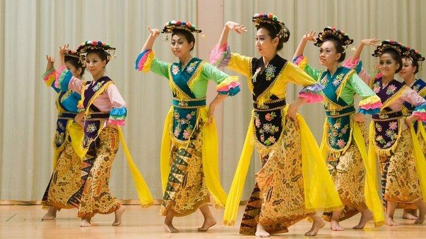
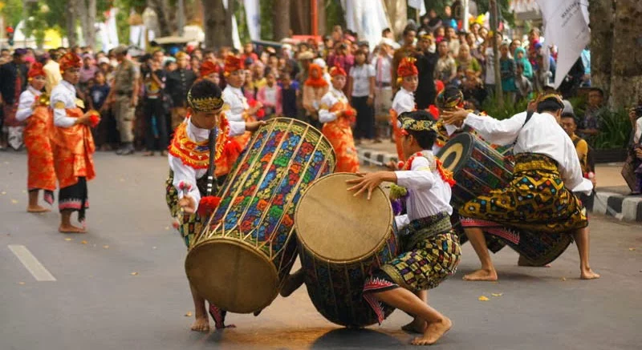

Sumatra
Nusa Tenggara
Maluku
Papua
Nusa Tenggara Barat
Nusa Tenggara Barat (disingkat NTB) ialah sebuah provinsi di Indonesia yang berada di bagian tengah Kepulauan Nusa Tenggara di antara provinsi Bali di sebelah barat dan provinsi Nusa Tenggara Timur di sebelah Timur. Pusat pemerintahan dan ibu kota provinsi ini berada di Kota Mataram. Nusa Tenggara Barat memiliki 8 Kabupaten dan 2 Kota, termasuk kota Mataram. Pada tahun 2020, penduduk Nusa Tenggara Barat berjumlah 5.320.092 jiwa, dengan kepadatan 264 jiwa/km2.
Informasi Umum
| Nama Provinsi | Kode Wilayah | Kode Internasional | Singkatan Umum | Ibu Kota | Hari Jadi | Lambang |
|---|---|---|---|---|---|---|
| Nusa Tenggara Barat | 52 | ID-NB | NTB | Mataram | 17 Desember 1958 |
|
Budaya

Berugaq atau Berugak Sekenam merupakan salah satu rumah adat NTB yang berfungsi sebagai ruang komunal. Rumah adat ini digunakan sebagai tempat berkumpulnya keluarga untuk belajar tentang kebudayaan dan tata krama. Sesuai namanya yakni Sekenam, rumah Berugaq ini memiliki enam tiang penyangga. Jika tiang penyangga hanya empat buah, maka disebut Berugaq Sekepat. Bagian bawah Berugaq meliputi lantai dasar sampai ke tempat duduk dan tiang penopang. Selain itu, pada bagian paling bawah juga terdapat elemen bernama sampak atau umpak, jejait, dan perteng.

Pakaian adat lambung merupakan pakaian adat Nusa Tenggara Barat yang berasal dari suku Sasak, dimana pakaian adat ini khusus digunakan oleh kaum wanita. Pakaian adat lambung ini berupa baju dengan warna hitam yang tidak mempunyai lengan dengan kerah berbentuk V.

Pakaian adat Pegon merupakan pakaian adat Nusa Tenggara Barat yang berasal dari suku Sasak, dimana pakaian ini khusus digunakan oleh kaum pria. Pegon merupakan baju adat berupa jas dengan warna gelap, dimana pakaian adat ini juga masih dipengaruhi oleh budaya Jawa.
Tarian khas Nusa Tenggara Barat (NTB) menjadi salah satu hal unik dan memukau untuk disaksikan. Setidaknya ada 10 tarian tradisional NTB. Tari-tarian tersebut ditampilkan dalam pertunjukan seni, acara adat, hingga untuk kepentingan pariwisata.

Tari Lenggo sering juga disebut Mpaa Lenggo berasal dari Bima, NTB. Tari ini hasil peninggalan Kerajaan Bima. Lenggo ditampilkan oleh empat perempuan dan empat laki-laki yang memakai pakaian adat Kota Bima. Tari Lenggo sering ditampilkan guna menyambut kedatangan tamu resmi.

Tari Oncer terbagi menjadi tiga bagian yang menceritakan tentang peperangan. Bagian pertama menceritakan tentang peperangan. Bagian dua dan tiga menggambarkan peristiwa setelah peperangan. Kemudian tarian ditutup dengan penyajian gendang beleq.
Bahasa Bajo merupakan bahasa yang bertanah asal dari Pulau Sulawesi. Bahasa ini juga dituturkan di Provinsi NTB. Wilayah sebaran bahasa Bajo di NTB terdapat di Kabupaten Lombok Utara (Desa Gili Indah, Kecamatan Pemenang dan Dusun Jambi Anom, Desa Medana, Kecamatan Tanjung); Kabupaten Lombok Timur (Desa Tanjung Luar, Kecamatan Keruak); Kabupaten Sumbawa (Pulau Kaung, Kecamatan Buer; Desa Labuhan Mapin, Kecamatan Alas Barat; Desa Labuhan Lalar, Kecamatan Taliwang; Desa Labuhan Bajo, Kecamatan Utan; Desa Pulau Bungin Kecamatan Alas; Dusun Labuhan Padi, Desa Pukat, Kecamatan Utan; Kabupaten Sumbawa Barat (Desa Poto Tano, Kecamatan Poto Tano); Kabupaten Dompu (Pulau Nisa, Desa Kwangko, Kecamatan Manggalewa dan Desa Soro, Kecamatan Kempo); dan Kabupaten Bima (Desa Bajo, Kecamatan Soromandi serta Desa Bugis dan Desa Bajo Pulo, Kecamatan Sape).

Peresean merupakan permainan tradisonal khas suku Sasak, Pulau Lombok dalam mengadu ketangkasan sekaligus olah kanuragan yang mengandalkan teknik memukul menggunakan alat penjalin (rotan) dan menangkis menggunakan ende (tameng). Pemain Peresean dikenal dengan nama Pepadu sedangkan wasit atau yang mengadu dalam arena pertarungan disebut dengan Pekembar. Konon, Peresean dahulunya digunakan sebagai tarung adat atau media penguji untuk seorang laki-laki suku Sasak yang beranjak dewasa.

Tulup merupakan senjata adat yang digunakan untuk menyerang dengan jarak jauh dan juga untuk berburu. Tulup merupakan senjata yang banyak digunakan oleh suku pedalaman, seperti di Papua, Kalimantan, Sumatera dan juga Nusa Tenggara Barat. Nenek moyang suku Sasak mengenal tulup sebagai alat untuk berburu binatang yang berada di hutan. Selain alat berburu, benda ini juga dianggap sebagai benda yang sakral. Tidak hanya itu, suku Sasak juga menganggap tulup sebagai alat yang digunakan untuk mencari rezeki sehingga perlu dihargai dan juga dihormati.

Gendang Beleq merupakan alat musik tradisional Nusa Tenggara Barat yang berasal dari suku Sasak, Lombok. Gendang Beleq adalah jenis gendang dengan ukuran yang relatif besar dari gendang pada umumnya. Beleq diambil dari bahasa Sasak dengan arti "besar", dengan demikian nama ini meenggambarkan ukuran gendang tersebut. Alat musik ini dijadikan pengiring dalam berbagai kegiatan dan acara, baik tarian tradisional, lagu daerah ataupun dalam upacara-upacara adat.
Kadal Nongak merupakan bentuk lagu nasihat yang berasal dari suku Sasak pulau Lombok Nusa Tenggara Barat.
Kuliner

Ayam Taliwang adalah makanan khas yang berasal dari Karang Taliwang, Mataram, Nusa Tenggara Barat. Makanan ini berbahan dasar daging ayam. Daging ayam yang disajikan berasal dari ayam kampung muda yang dibakar kemudian dibumbui dengan semacam saus yang bahannya antara lain cabai merah kering, bawang merah, bawang putih, tomat, terasi goreng, kencur, gula merah, dan garam.
Destinasi Wisata

Air Terjun Benang Kelambu merupakan air terjun yang sudah terkenal hingga ke mancanegara. Air Terjun Benang Kelambu berada di Kabupaten Lombok Tengah bagian utara, lebih tepatnya di Dusun Pemotoh, Desa Aik Berik, Kecamatan Batukliang Utara. Daya tarik utama dari Air Terjun Benang Kelambu adalah keberadaan air terjunnya yang lebih dari satu. Arus air yang turun mengalir di tebing batu sehingga terlihat seperti tirai yang terjulur ke bawah. Itulah kenapa disebut dengan Air Terjun Benang Kelambu, layaknya benang kelambu dari air yang turun ke bawah melalui dinding batu terebut.